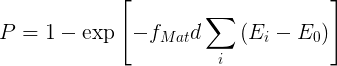
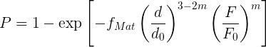
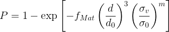

fix break/particle command¶
Syntax¶
fix ID group-ID break/particle seed seed_value distributiontemplate dist-ID general_keywords general_values break_keywords break_values ...
ID, group-ID are documented in fix command
break/particle = style name of this fix command
seed = obligatory keyword
seed_value = random # seed (positive integer)
distributiontemplate = obligatory keyword
dist-ID = ID of a fix_particledistribution_discrete to be used for fragment insertion
one or more general keyword/value pairs can be appended
general_keywords = verbose or every or start
verbose = yes or no every value = ie ie = every how many time-steps breakage criterion is checked - check happens periodically (positive integer) start value = ts ts = time-step at which fragmentation should start (positive integer larger than current time-step)
following the general keyword/value section, one or more break keyword/value pairs can be appended for the fix break/particle command
break_keywords = breakability or fMat or energy_threshold or force_threshold or von_mises_stress or min_radius
break_keywords = where exactly one out of energy_threshold or force_threshold or von_mises_stress has to be defined
breakability values = random_style (param1 (param2)) random_style = constant or uniform or gaussian param1 = value for constant, omitted for uniform, mu value for gaussian param2 = omitted for constant and uniform, sigma value for gaussian fMat value = mparam mparam = material parameter characterising the resistance against fracture (can be a variable) energy_threshold value = dE0 dE0 = product of particle diameter and mass specific threshold energy for the impact energy criterion (can be a variable) force_threshold value = F0 F0 = reference force for the maximum force criterion (can be a variable) von_mises_stress value = sigma0 sigma0 = reference stress for the von Mises stress criterion (can be a variable) min_radius value = mrad mrad = minimum radius of particles below which no breakage will occur (positive float)
Examples¶
fix break all break/particle seed 531 distributiontemplate pdd1 every 100 breakability gaussian 0.63 0.11 fMat 675 von_mises_stress 30000 min_radius 0.015
LIGGGHTS vs. LAMMPS Info:
This command is not available in LAMMPS.
Description¶
Apply the discrete fragmentation method (DFM) to simulate the breakage of brittle granular particles (see Bruchmüller and Esnault).
The verbose keyword controls whether statistics about particle breakage is output to the screen each time particles are broken.
This command must use the distributiontemplate keyword to refer to a fix_particledistribution_discrete (defined by dist-ID) that defines the properties of the inserted particles. The fix_particledistribution_discrete in turn must refer to exactly one fix_particletemplate_fragments
At each invocation step, fix break/particle checks the breakage criterion of the particles in the group defined by group-ID. The breakage criterion can be based either on impact energy (keyword energy_threshold), a maximum amount of force (keyword force_threshold), or the von Mises stress (keyword von_mises_stress). Exactly one out of the keywords energy_threshold, force_threshold, von_mises_stress must be defined.
The frequency of the check can be controlled by the keyword every, which defines the number of time-steps between two checks. In case of the impact energy criterion, every must be set to 1 to detect the moment of impact correctly.
The start keyword can be used to set the time-step at which the insertion should start.
Inserted fragments are assigned to 4 groups: the default group “all” and the group specified in the fix break/particle command, as well as the groups specified in the fix_particledistribution_discrete and fix_particletemplate_fragments command (all of which can also be “all”).
Fragments are inserted without any overlap with other existing particles or walls. Due to this packing, fragments of the same broken particle may have an initial overlap which is scaled accordingly to conserve energy.
The breakability option specifies the strength value of the particles. This can be a constant value (constant), a uniformly distributed random number (uniform), or a gaussian distribution of numbers (gaussian).
Use the energy_threshold keyword to apply the impact energy criterion. The value to be specified is the constant product of particle diameter and mass specific threshold energy dE0. The probability of breakage is calculated as
Use the force_threshold keyword to apply the maximum force criterion. The value to be specified is the characteristic force F0 (i.e., most breakage events will take place for forces of order F0). The probability of breakage is calculated as
Use the von_mises_stress keyword to apply the von Mises stress criterion. The value to be specified is the characteristic stress sigma0 (i.e., most breakage events will take place for stresses of order sigma0). The probability of breakage is calculated as
The Weibull modulus m in the probability functions is set to one in the current implementation.
The material parameter fMat characterizes the resistance against fracture. In case of the impact energy based criterion, it is related to the Julius Kruttschnitt standard “slope” parameter determined experimentally in drop weight tests and is specified in kg/Jm. For the the maximum force and the von Mises stress criterion fMat is a dimensionless model parameter multiplied by 1/d<sub>0</sub> and 1/d<sub>0</sub><sup>3</sup>, respectively.
Any of fMat, energy_threshold, force_threshold and von_mises_stress can be specified as an equal-style or atom-style variable. If the value is a variable, it should be specified as v_name, where name is the variable name. In this case, the variable will be evaluated each timestep.
Equal-style variables can specify formulas with various mathematical functions, and include thermo_style command keywords for the simulation box parameters and timestep and elapsed time.
Atom-style variables can specify the same formulas as equal-style variables but can also include per-atom values, such as atom coordinates. Thus it is easy to specify a spatially-dependent breakage criterion with optional time-dependence as well.
To limit the number of fragments created in the course of a simulation, the min_radius option can be used to define a minimum particle radius, below which no breakage will occur.
Restart, fix_modify, output, run start/stop, minimize info:
Information about this fix is written to binary restart files. This means you can restart a simulation while breaking particles, when the restart file was written during the breakage operation.
None of the fix_modify options are relevant to this fix. A global vector is stored by this fix for access by various output commands. The first component of the vector is the number of particle templates already inserted, the second component is the mass of particles already inserted. No parameter of this fix can be used with the start/stop keywords of the run command. This fix is not invoked during energy minimization.
Restrictions¶
This fix requires the pair_style gran to be used with either hertz/break or hooke/break specified as model.
Default¶
The defaults are verbose = yes, start = next time-step, breakability = uniform, min_radius = 0
(Bruchmüller, 2011) “Modelling discrete fragmentation of brittle particles”, J. Bruchmüller, B. G. M. van Wachem, S. Gu, K. H. Luo, Powder Technology, 208, p. 731 (2011).
(Esnault, 2013) “3D numerical simulation study of quasistatic grinding process on a model granular material”, V. P. B. Esnault, J.-N. Roux, Mechanics of Materials, 66, p. 88 (2013).